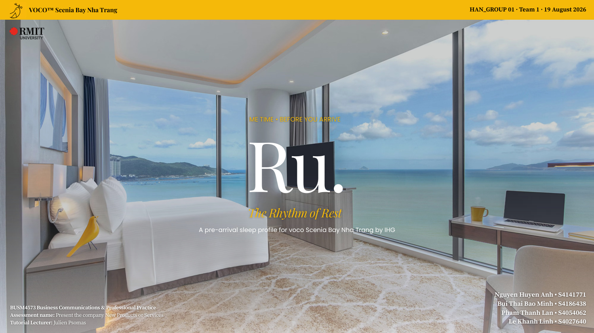
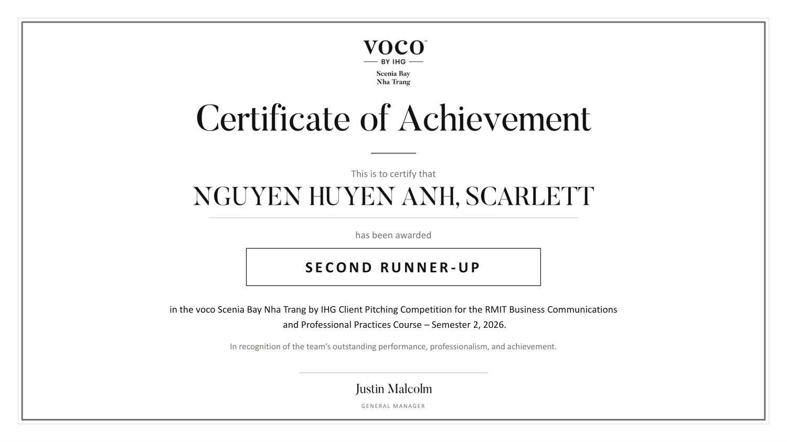

← Back to recognition

Recognition · Sep 2026
Top 3 / 6
Second Runner-up in the voco Scenia Bay Nha Trang by IHG Client Pitching Competition for RMIT Business Communications & Professional Practice.
What it recognised
Our Hanoi team developed and pitched RU — The Rhythm of Rest to an industry panel in Saigon. The certificate recognises the team’s outstanding performance, professionalism and achievement.
